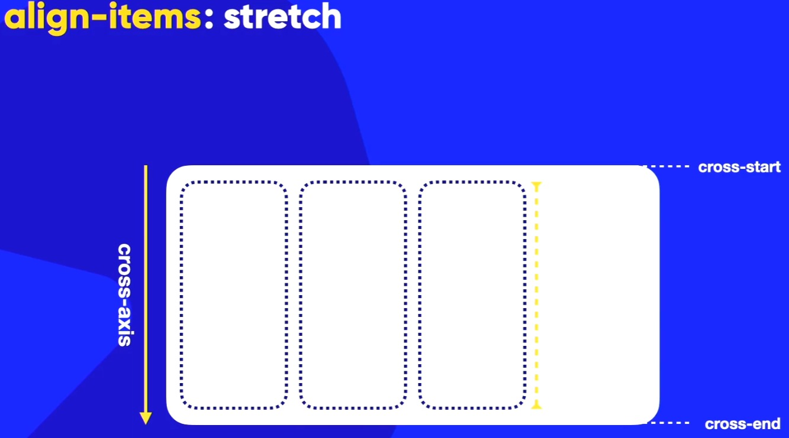
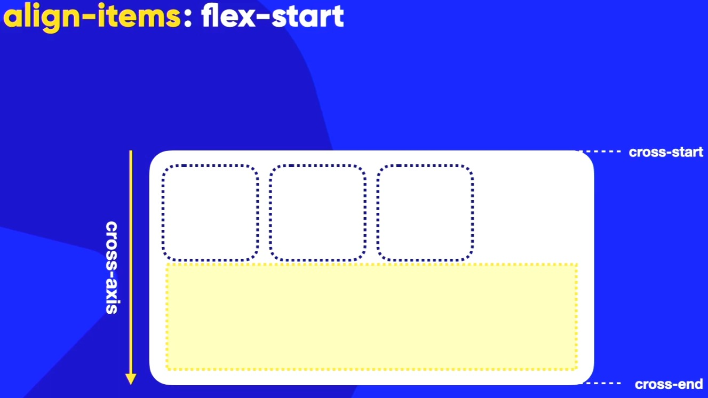
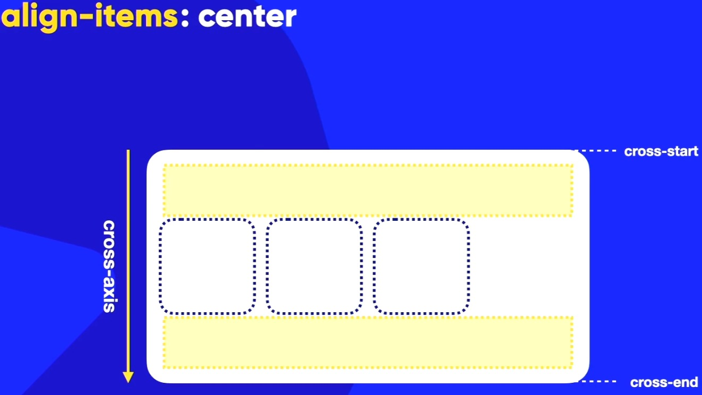

Ao usarmos a propriedade align-itens, estamos definindo o alinhamento dos itens ao longo do eixo transversal (o CROSS-AXIS) do container flexível. O eixo transversal é perpendicular ao eixo principal (MAIN-AXIS), que é determinado pela propriedade flex-direction.
Lembrando também que ele tem as propriedades cross-start e cross-end! Quando ele estiver com o valor padrão ROW, o cross-start estará na parte de cima e o cross-end na parte de baixo.
Para alinhar um item no cross-axis, é preciso aumentar o tamanho do container flexível no eixo transversal. Isso pode ser definido com o height.
Por padrão do align itens é o stretch que faz com que os itens se estiquem para preencher o container flexível no eixo transversal! Ao aumentar a altura do container, os itens também aumentam sua altura para poder preender o espaço disponível! Por padrão, ele não tem o valor flex-start/flex-end. Eis na imagem abaixo um exemplo ↓:

O flex-start vai fazer com que os itens se alinhem no início do eixo transversal (cross-start) do container flexível. Ou seja, todos os itens serão posicionados na parte suoperior do container flexível. O espaço em branco ficará na parte inferior do container flexível. Na imagem abaixo, na parte amarela aparecerá o espaço em branco (vazio). Você vai observer também que ficará um espaço branco na lateral direito do container flexível e para que a gente possa resolver isso, podemos usar o justify-content: ! Ou seja, ele faz parte do nosso MAIN-AXIS e não do nosso CROSS-AXIS que é esse caso.

Da mesma forma que o flex-start só que ao contrário! O flex-end vai fazer com que os itens se alinhem no final do eixo transversal (cross-end) do container flexível. Ou seja, todos os itens serão posicionados na parte inferior do container. O espaço em branco ficará na parte superiror do container.
O align-itens: center; vai pegar os itens e alinhar eles no centrod o eixo transversal (CROSS-AXIS) do container. Ou seja, os itens ficarão centralizados verticalmente dentro do container com espaço igual na parte superior e inferior do container. Veja imagem abaixo:
